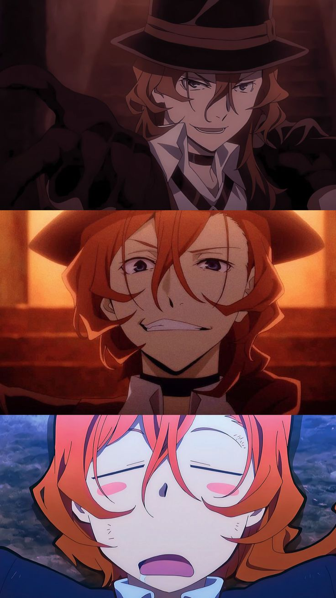

Dazai Osamu 太宰治
能力名：人間失格，能夠消除其它異能的效果。座右銘是「清爽明朗且充滿朝氣地自殺。」異能力集團「武裝偵探社」的一員。尋求葬身之地的自殺愛好者。即使討厭痛苦，也希望可以和美女殉情。飄飄然而孑然一身，自己無法被猜到的偵探社之前的職業被稱為「偵探社七大不可思議之一」。前黑手黨，暨港口黑手黨最年輕的幹部。
Edogawa Ranpo 江戶川亂步
能力名：超推理，能在一瞬間解開謎團。只有在戴上了社長給的眼鏡的時候才能發動，但實際上超推理並不是異能，完全是因為自己的洞悉能力過強。異能力集團「武裝偵探社」的名偵探。有著連同僚們都甘拜下風的敏銳觀察眼，將被警察委託的疑難案件導向解決的名偵探。為人自信，目中無人的孩子氣舉止非常醒目。座右銘是「只要我好，一切都好」，因為在推理小說的世界中，偵探通常必須是最後解謎的至關重要的角色。

Nakahara Chuuya 中原中也
能力名：污濁了的憂傷之中，能夠操縱觸碰到的物體所受重力的方向和大小。能力的真正型態－－污濁型態，能夠操作周圍的重力子，壓縮成重力子彈（小型黑洞）吞噬一切。但是本人無法控制該狀態，會暴走到精疲力竭而亡。港口黑手黨的幹部，厭惡著太宰治的同時卻又非常信任他。是太宰治的前搭檔，兩人被合稱為「雙黑」。雖然個子小卻很機敏，同時會使用剛力的體術。愛用黑帽子。
Tanizaki jyunichirou 谷崎潤一郎
能力名：細雪，能在周圍的空間製造幻境。將前發用髮卡別住，穿著松松垮垮襯衫的軟派青年。谷崎直美的哥哥，非常疼愛妹妹或者說為了妹妹可以放棄節操和道德。

Sigma 西格瑪
能力名：不明，能透過觸摸某人，將「對方最想知道的情報」與「自己最想知道的情報」交換。「天人五衰」的成員。本名不詳，天空賭場的總經理，視賭場如同自己的生命。
Nikolai Gougoli 尼古拉・果戈里
能力名：外套，能將斗篷的布面與最遠30公尺範圍內的空間連結起來。「天人五衰」的成員，通稱「小丑」。穿著魔術師套裝，右臉上戴著半個面具，性格瘋狂的殺人鬼。

Suehiro Tecchou 末廣鐵腸
能力名：雪中梅，能將劍刃自由伸縮及彎曲來進行攻擊。「獵犬」隊員。
Tachihara Michizou 立原道造
能力名：仲冬的遺物，操縱金屬的能力。「港區黑幫」武鬥派「黑蜥蝪」十人長。真實身分是「獵犬」隊員，被派往「港區黑幫」臥底。貼著OK繃的少年。